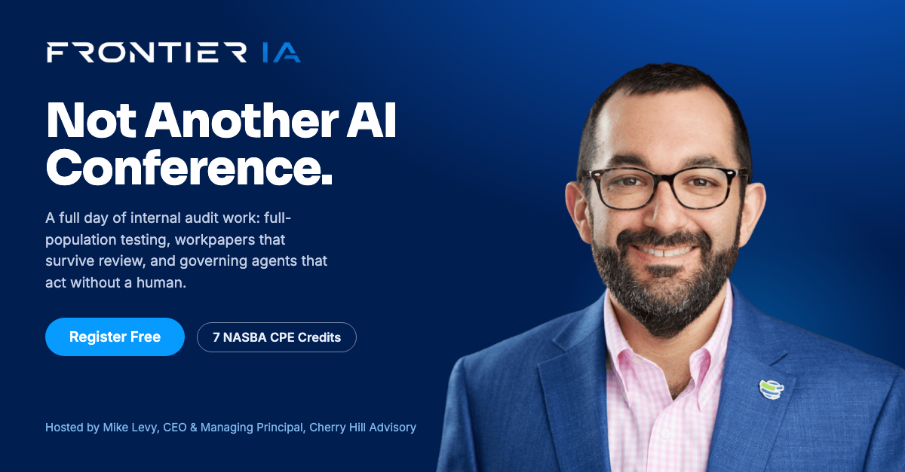

Tue Sep 22Company
The lead post. Sets the line for the whole campaign: a full day of audit work, not a keynote. Boost it.
Caption
Not another AI conference. A full day of internal audit work.
You've probably sat through an AI session that told you nothing you could use on Monday. Frontier IA is built the other way: three concurrent tracks, named sessions with stated learning objectives, and a two-hour hands-on lab on prompt patterns and defensible documentation.
Full-population testing. Workpapers that survive review. Governing agents that act without a human.
7 NASBA CPE credits, two of them ethics. Tuesday, December 8, virtual, free.
Register: cherryhilladvisory.com/frontier2026
#InternalAudit #AIGovernance #FrontierIA #CherryHillAdvisory